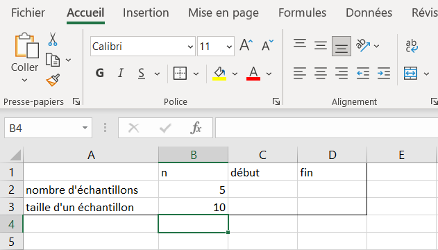
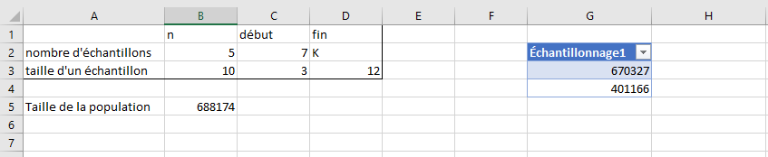
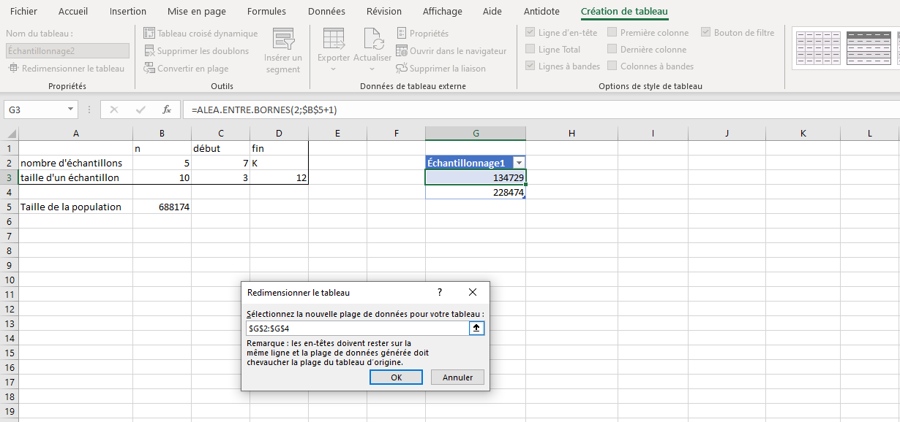
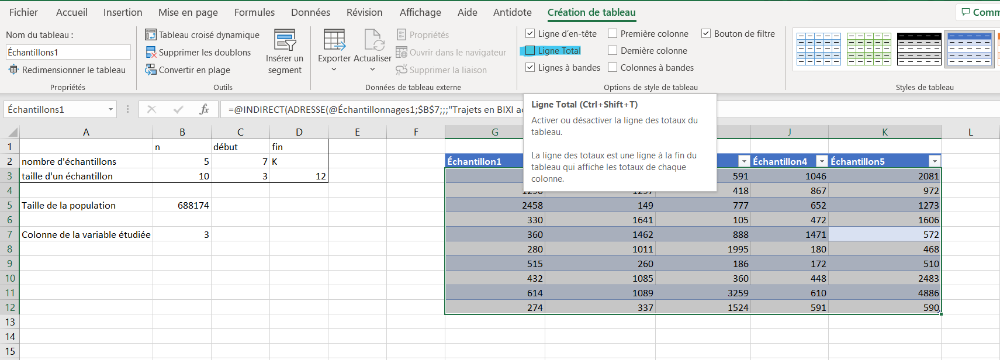
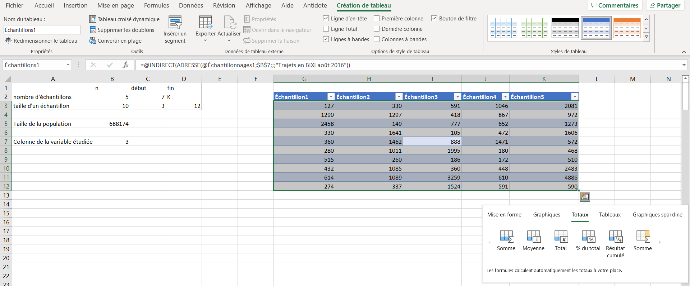
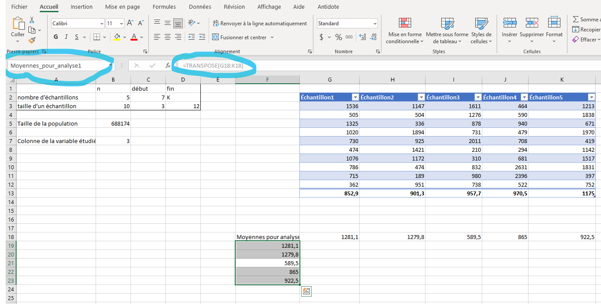
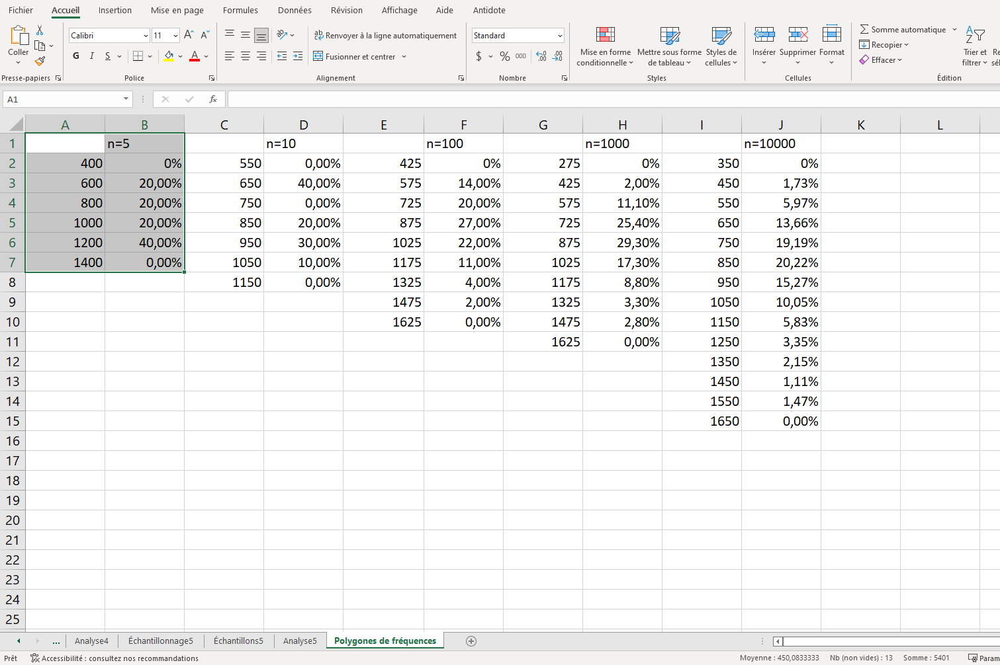
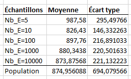

Section 4.2 Laboratoire
Il est rare que l’on ait accès à la population. Lorsque l’on calcule des mesures statistiques comme la moyenne, la médiane ou l’écart type à partir d’un échantillon, il est essentiel de comprendre que ces valeurs seraient fort probablement différentes si l’échantillon était lui-même différent. En fait, chacune des ces mesures statistiques est une variable aléatoire dont la distribution dépend de celle de la population et de ses paramètres.
Puisque l’on a accès aux données de la population, il est possible d’observer les variations de la moyenne échantillonnale, notée \(\overline{X}\text{,}\) selon l’échantillon choisi et de comparer ces variations à la véritable moyenne, que l’on peut calculer. Dans la pratique, ces données ne seraient probablement pas disponibles. Il faudrait donc estimer les paramètres de la distribution, comme la moyenne, à l’aide d’un échantillon. Toutefois, il faut être conscient des limites de ces estimations et comprendre comment se comporte la variable aléatoire \(\overline{X}\) pour en tirer de bonnes conclusions.
Sous-section 4.2.1 Préparation du fichier
L’échantillonnage est le procédé par lequel on sélectionne les unités statistiques d’une population afin qu’ils fassent partie d’un échantillon. Il existe plusieurs techniques d’échantillonnage, séparées en deux catégories: aléatoires et non aléatoire. Dans un monde idéal, il faudrait toujours que l’échantillonnage soit fait de manière aléatoire, mais, pour des raisons parfois d’impractibilité, ce n’est pas toujours possible. Comme l’étude des techniques d’échantillonnage n’est pas l’objectif de ce laboratoire, on procédera par l’une des méthodes les plus simples, soit l’échantillonnage aléatoire simple, avec remise. Cela signifie que chaque individu de la population a la même chance d’être choisi pour faire partie de l’échantillon et ce, pour chaque membre de l’échantillon (c’est ce que le «avec remise« signifie). Comme la taille de la population est grande comparativement à la taille des échantillons qui seront considérés, cette technique n’a pas tendance à donner des résultats trop différents de celle où l’on aurait pris les échantillons sans remise.
Pour comprendre le comportement de \(\overline{X}\text{,}\) on s’intéresse à deux paramètres, soit la taille des échantillons, noté \(n\) et le nombre d’échantillons tirés, noté \(Nb_{E}\text{,}\) permettant d’observer l’allure de la distribution.
On voudra étudier comment varie la distribution de \(\overline{X}\) en la regardant sous ces deux angles. Dans le premier cas, on fixe une taille d’échantillon \(n=10\) et l’on regarde la distribution de \(\overline{X}\) en considérant plusieurs ensembles d’échantillons de taille variée (\(Nb_E\in\{5,10,100,1000,10000\}\)). Ensuite, on étudie l’effet de l’augmentation de la taille des échantillons \(n\in \{10,30,100,1000,10000\}\) sur la distribution lorsque le nombre d’échantillons tirés est fixé à \(Nb_E=100\text{.}\)
Dans le coin supérieur gauche de la feuille de calculs Échantillonnage_canevas, reproduire la table ci-dessous.

La table est de taille trois par quatre. La cellule A1 est vide, de même que les cellules de la plage C2 à D3. Les cellules A2 et A3 contiennent respectivement les phrases « nombre d’échantillons» et« taille d’un échantillon». Les cellules B1,C1 et D1 contiennent respectivement «n», «début» et «fin». La cellule B2 contient le nombre 5 et la cellule B3 contient le nombre 10.
Sous la table, par exemple dans la cellule
A5, inscrire «Taille de la population» À droite de cette case, entrer la formule =NB(Durée__s). Cette formule devrait retourner \(688174\text{,}\) soit la taille de la population.Quelque part à la droite de la table, insérer un nouveau tableau en cliquant sur le bouton approprié du ruban sous l’onglet insertion. Le tableau doit contenir une colonne et moins de dix lignes. Renommer le nom de la colonne «Échantillonage1». Sous l’onglet Formules, cliquer sur le bouton Gestionnaire de noms et renommer le tableau créé «Échantillonnages».
Dans la première ligne du tableau, entrer la formule
=ALEA.ENTRE.BORNES(2;$B$5+1). Si B5 n’est pas la cellule qui contient la taille de la population, remplacer par la cellule appropriée. Cette commande devrait remplir le tableau de nombres aléatoires. Ces nombres correspondent à des numéros de lignes du tableau Données. Ils indiquent quels trajets feront partie dee échantillons.Le tableau Échantillonnages va contenir autant de colonnes que le nombre d’échantillons que l’on souhaite avoir et autant de ligne que la taille de ces échantillons. Chaque colonne de ce tableau représentera ainsi un échantillon de la population. Puisque l’on veut étudier la variation de \(\overline{X}\) selon le nombre d’échantillons et la taille, il faut que les dimensions de ce tableau puissent s’ajuster. C’est ici que la table construite dans la plage
A1:D3 va être utile. À l’aide de fonctions Excel, dont le fonctionnement est expliqué dans l’Appendice E, on pourra calculer la plage que devra occuper le tableau.Dans la cellule
C2, on veut inscrire la première colonne du tableau. Entrer la formule =@COLONNE(Échantillonnages). Ceci devrait donner sous la forme d’un nombre la première colonne du tableau. Dans la cellule D2, on veut connaitre la dernière colonne du tableau, en fonction du nombre qui est inscrit dans la cellule B2 (par défaut, 5, mais ce sera modifié plus tard). On veut aussi connaitre cette colonne non pas sous sa forme numérique, mais sous son nom lettré. Entrer la formule =SUBSTITUE(ADRESSE(1;C2+B2-1;4);"1";""). Cela devrait donner la lettre correspondant à la cinquième colonne d’un tableau qui en contiendrait \(5\) s’il commençait la où se trouve le tableau Échantillonnages.

La table est de taille trois par quatre. La cellule A1 est vide. Les cellules A2 et A3 contiennent respectivement les phrases « nombre d’échantillons» et« taille d’un échantillon». Les cellules B1,C1 et D1 contiennent respectivement «n», «début» et «fin». La cellule B2 contient le nombre 5 et la cellule B3 contient le nombre 10. La plage C2 à D3 contient des nombres selon les formules de la partie précédente.
On répète la procédure pour déterminer la dernière ligne du tableau. Dans la cellule
C3, entrer la formule =@LIGNE(Échantillonnages). Dans la cellule D3, entrer la formule =C3+B3-1. À ce stade-ci, la feuille de calculs devrait ressembler à celle de l’image ci-dessous, avec des valeurs différentes dans le tableau Échantillonnages.Avant de construire le premier ensemble d’échantillon, on va sauvegarder le travail effectué jusqu’à maintenant sous la forme d’un canevas que l’on pourra réutiliser pour les différentes études ci-dessous et dans le post laboratoire. Effectuer un clic-droit sur le nom de la feuille de calcul et cliquer sur «Protéger la feuille… ». Une fenêtre devrait apparaitre. N’entrer pas de mot de passe et cliquer simplement sur « OK ». Ceci empêche maintenant toute modification sur cette feuille de calculs.
Toujours à l’aide d’un clic droit sur le nom de la feuille, cliquer sur « Déplacer ou copier ». Dans la fenêtre qui apparait, cocher la case «Créer une copie », sélectionner le positionnement « (en dernier) » et appuyer sur « OK ». Excel crée ainsi une copie du canevas qui constituera la feuille de calculs de la première étude. On renomme cette feuille de calcul «Échantillonnage1». Cette nouvelle feuille de calculs est aussi verrouillée. Il est possible de la déverrouiller en effectuant un clic droit sur son nom et en cliquant sur «Ôter la protection de la feuille …. permettant ainsi sa modification. Également, le tableau de cette copie s’est vu attribuer un nom par Excel afin de le distinguer du tableau de la feuille originale. Ce n’est pas un problème en soi, mais il faudra être conscient du nom de ce tableau pour la suite ou encore le renommer. Par simplicité, on continue d’y faire référence sous le nom Échantillonnages dans ce qui suit.
Sous-section 4.2.2 Création du premier échantillon
Le premier cas de figure étudié est lorsque la taille de l’échantillon est égale à \(10\text{.}\) On commence par tirer cinq échantillons au hasard dans la population. Comme ce sont ces paramètres qui avaient été placés dans la table de construction, on n’a pas à modifier ces valeurs cette fois. Voici la procédure pour sélectionner les échantillons.
- Cliquer sur l’une des cellules du tableau Échantillonnages.
- Sous l’onglet «Création de tableau», cliquer sur le bouton du ruban appelé «Redimensionner le tableau ».
- Dans la fenêtre apparaissant, modifier la fin de la plage afin qu’elle corresponde avec ce qui est inscrit aux cellules
D2etD3. Appuyer sur «OK». Le nouveau tableau devrait apparaitre, sans valeurs dans les colonnes à droites. - Cliquer sur une cellule de nouveau tableau et effectuer la combinaison Ctrl+A afin de sélectionner toutes les cellules du tableau, puis effectuer la combinaison Ctrl+D afin de propager les formules vers la droite.
La figure ci-dessous illustre ces étapes.

Les nombres dans la tableau représentent les lignes du tableau Données qui ont été sélectionnées pour faire partie des échantillons. Il faut maintenant aller lire dans les données la valeur de la variable à l’étude. Créer une copie de la feuille Échantillonnage1 et nommer cette feuille «Échantillons1».
- Dans cette nouvelle copie, inscrire sous la table de construction dans la colonne
Ale texte «Colonne de la variable étudiée ». - Entrer
=@COLONNE(Durée__s)dans la cellule de adjacente. - Dans le gestionnaire de noms, vérifier et changer le nom du tableau de cette nouvelle feuille pour «Échantillons1».
- Renommer le titre de la première colonne de ce tableau «Échantillon».
- Toujours avec le titre de la première colonne sélectionné, effectuer la combinaison Ctrl+Shift+→ afin de sélectionner tous les titres de colonnes.
- Effectuer la combinaison Ctrl+D pour propager à droite le titre Échantillon.
- Ajouter un «1» au titre de la première colonne.
- Dans n’importe quelle cellule de la première colonne du tableau Échantillonnages, remplacer la formule en place par
=@INDIRECT(ADRESSE(@Échantillonnages1;$B$7;;;"Trajets en BIXI août 2016")), en prenant le soin de remplacer le nom «Échantillonnages1» par le nom qu’Excel a donné au tableau de la feuille Échantillonnage1. - Sélectionner tout le tableau Échantillons1 et propager à droite la nouvelle formule. Le tableau contient maintenant la durée en secondes des échantillons. La Figure 4.2.6 illustre à quoi devrait ressembler la feuille de calculs Échantillons1 jusqu’à présent.
-
On veut maintenant ajouter les moyennes sous le tableau. Pour cela:
- Sélectionner le tableau Échantillons1;
- Sous l’onglet Création de tableau, cocher la case Ligne Total. Il est aussi possible de cliquer sur l’icone dans le coin inférieur droit qui apparait une fois le tableau sélectionné;
-
Dans les deux cas, cliquer sur cet icône, puis sous Totaux, cliquer sur Moyenne. La figure ci-dessous illustre ces étapes.
Figure 4.2.4. Ajout de la ligne des moyennes - Il est aussi possible d’utiliser la formule
Moyennesous la première colonne et de propage vers la droite par la suite. En fait, ceci est préférable s’il y a beaucoup de valeurs dans le tableau, car l’utilitaire ci-dessus nécessite davantage de ressources de la part de l’ordinateur.

La figure ci-dessous montre le résultat final du tableau des échantillons, avec la ligne des moyennes ajoutée.

Sous-section 4.2.3 Analyse de l’échantillon
Il est maintenant temps de procéder à l’analyse des données. Le lecteur aura sans doute remarqué qu’Excel recalcule les échantillons chaque fois qu’une nouvelle information est entrée dans une cellule, que celle-ci soit reliée au tableau des échantillons ou non. Toutefois, lorsque vient le temps d’analyser les échantillons, il est préférable que les données ne changent plus. Bien qu’il soit possible d’automatiser plusieurs étapes, certaines décisions doivent être prises en regard avec les données spécifiques à un ensemble d’échantillons. Par exemple, on peut penser à l’amplitude des classes dans l’histogramme, qui pourrait varier d’un tirage à un autre.
Copier les moyennes du tableau à un autre endroit dans la feuille Échantillons1, en s’assurant de faire un collage spécial (ToDo référence annexe?) avec les valeurs seulement. Inscrire à gauche de cette ligne de moyennes le titre « Moyennes pour analyse ». Sous cette cellule, entrer la commande
=TRANSPOSE(plage), où plage est la plage de cellules où se retrouvent les moyennes pour analyse. Ceci va convertir le format horizontal en format vertical, nécessaire pour introduire un tableau croisé dynamique. Nommer cette plage verticale dans le gestionnaire de noms.
Créer une nouvelle feuille de calculs appelée «Analyse1». Dans cette nouvelle feuile, insérer un tableau croisé dynamique à partir de la plage verticale contenant les moyennes, dans le but de construire une histogramme.
En suivant la procédure décrite dans la Sous-sous-section 3.2.1.4, faire le groupement dans tableau croisé dynamique. Ensuite, produire l’histogramme pour représenter les données.
Sous-section 4.2.4 L’influence du nombre d’échantillons
On répète maintenant les étapes des sous-sections Sous-section 4.2.2 et Sous-section 4.2.3 afin de regarder le comportement lorsque le nombre d’échantillons tirés est de \(10\text{,}\) \(100\text{,}\)\(1000\) et \(10 000\) trajets. On note que pour aller avec un plus grand nombre d’échantillons, par exemple \(100 000\text{,}\) il faudrait changer la manière de procéder puisqu’Excel est limité à un peu plus de \(16 000\) colonnes.
Une fois les histogrammes pour les autres cas créés, on les combine dans un seul graphique afin d’observer l’impact du nombre d’échantillons sur le comportement de la moyenne \(\overline{X}\text{.}\) On pourrait utiliser le polygone de fréquences d’Excel pour afficher simultanément les courbes sur un même graphique, mais ce type de graphique ne permet pas de tracer des séries de données qui possèdent des abscisses différents, ce qui est fort probablement le cas ici.
On utilise plutôt le graphique « Nuages de points ». De plus, on utilise l’option « avec lissage » dans le but de voir le comportement limite s’approchant de la loi normale.
- Créer une nouvelle feuille de calculs appelée « Polygones de fréquences ».
- Recopier les valeurs ayant servi à construire les histogrammes, en prenant soin de changer les valeurs des abscisses pour le point milieu de chacune des classe. Le résultat devrait ressembler à ce qui est illustré à la Figure 4.2.8.
- Sélectionner la première plage de données, incluant le titre \(n=5\text{.}\)
- Sous l’onglet Insertion, cliquer sur le bouton «Insérer un nuage de point (X,Y) ou un graphique en bulles » et choisir l’option « Nuage de points avec courbes lissées ».
- Déplacer ce graphique afin qu’il ne couvre pas les séries de données.
- Sélectionner le graphique. Sous l’onglet Création de graphique, cliquer sur Sélectionner des données. Il est également possible de faire un clic droit sur le graphique et de cliquer sur Sélectionner des données.
- Dans la fenêtre qui s’ouvre, cliquer sur Ajouter sous « Entrées de légende (Séries).
- Sélectionner les plages correspondant au titre, aux abscisses et aux ordonnées (les pourcentages). Appuyer sur OK.
- Répéter afin d’ajouter toutes les séries de données.
- Effectuer la mise en forme, selon la procédure décrite à la Sous-sous-section 3.2.2.2. La Figure 4.2.9 illustre ces étapes.


On termine cette l’analyse de l’impact du nombre d’échantillons pour une taille fixé en regardant le comportement de la moyenne des moyennes et de l’écart type des moyennes. Pour cela, on commence par calculer la moyenne et l’écart type de la population, chose qu’il n’est normalement pas possible de faire.
- Créer une feuille de calcul appelée « Analyse quantitative taille 10 ».
- Reproduire le résultat de la Figure 4.2.10. Évidemment, les valeurs seront différentes. S’assurer de calculer les moyennes à partir des données qui ont été gelées et de prendre la formule pour un échantillon pour les écarts types, sauf pour celui de la population.

La capture d’écran montre une table contenant sept lignes et trois colonnes. La première ligne s’intitule Échantillons et contient les valeurs Nb_E=5,Nb_E=10,Nb_E=100,Nb_E=1000,Nb_E=10000 ainsi que Population. La deuxième colonne est titrée Moyenne et contient les moyennes des échantillons et de la population. La dernière colonne est appelée Écart type et contient les écarts types des échantillons et celui de la population.
On observe que la moyenne des moyennes semble se rapprocher de la véritable moyenne, mais pas l’écart type. Ce dernier semble tout de même se rapprocher d’une valeur.
Sous-section 4.2.5 L’influence de la taille des échantillons
On regarde maintenant comment se comporte la moyenne échantillonnale lorsque le nombre d’échantillons reste fixe, mais que la taille de chacun des échantillons augmente. En répétant les étapes des sous-sections précédentes, faire l’analyse complète pour des tailles des échantillons de taille \(10,30,100,1000\) et \(10000\text{.}\) Fixer le nombre d’échantillons pour chaque cas à \(100\text{.}\) À noter que le cas pour la taille \(10\) a déjà été effectué et devrait se trouver dans les feuilles de calculs Échantillonnage3,Échantillons3 et Analyse3.
Encore une fois, on peut observer que la moyenne des moyennes se rapproche de la véritable moyenne, mais pas l’écart type. Toutefois, l’écart type semble devenir de plus en plus petit, en accord avec le théorème central limite, ce qui transpire aussi dans l’allure des courbes, qui s’écrasent de plus en plus vers la valeur centrale à mesure que \(n\) augmente.